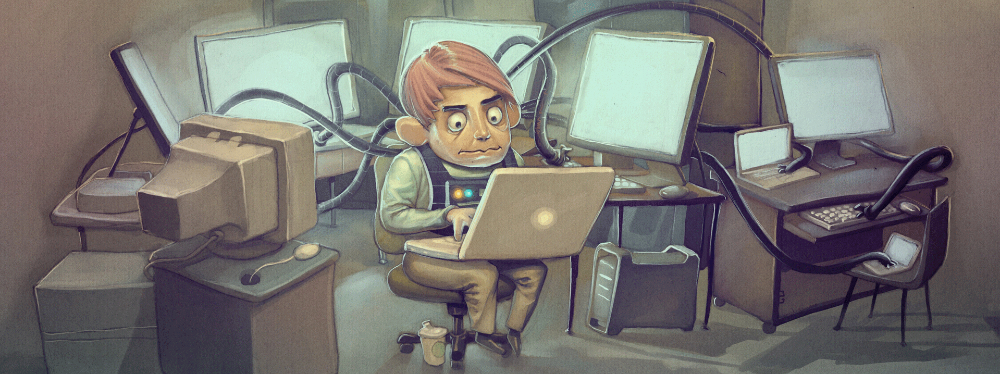

{ j.schick }
Go to Content
Go to End
back to main page
{ gallery }
This could be awesome... if I had pictures to show!
This is me working on my photos for this project.
This is a random programmer who clearly spent too much time in front of his PC.

This is actually a cool graphic.